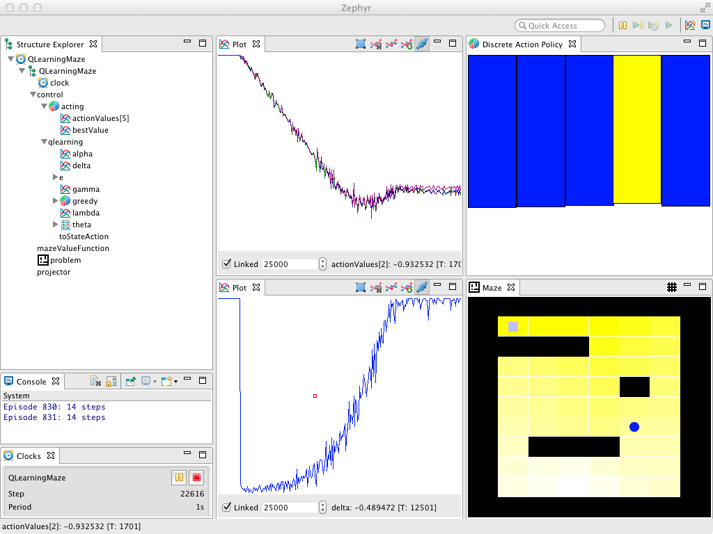

Code Snippet: Q-Learning in a Maze

Description: Q-Learning in a maze with the value function initialized optimistically
Source code:
Reference:
Reinforcement Learning, An Introduction. R. S. Sutton and A. Barto (1998). Section 7.6.
Running this demo:
- From the command line:
- Download rlpark.jar
- Run the following command line:
java -cp rlpark.jar rlpark.example.demos.learning.QLearningMaze
- In Zephyr standalone application:
- Download Zephyr standalone application
- Install RLPark plug-ins in Zephyr
- Go to:
- In Eclipse, as a Java Application:
- Create a new or use an existing project
- Include rlpark.jar in the project classpath
- Run a
Java Application target using
rlpark.example.demos.learning.QLearningMaze as a main class
- In Eclipse, as an Eclipse Application:
- Install Zephyr plug-ins and
RLPark plug-ins in Eclipse
or
download RLPark source code and import RLPark projects (including the demo project
rlpark.example.demos) into the workspace
- Set up an
Eclipse Application target following the tutorial
Using Zephyr plug-ins
- In the
Eclipse Application target configuration:
- In the menu, go to:
- Select the
Eclipse Application target
- In the tab, select the plug-in
rlpark.example.demos and
rlpark.plugin.rltoysview to enable RLPark views
- Start Zephyr by running the
Eclipse Application target
- In the Zephyr menu, go to:
or in the tab, add
rlpark.example.demos.learning.QLearningMaze to the
text field
Dependencies
zephyr.plugin.core.api, rlpark.plugin.rltoys